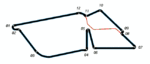
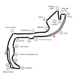

De: La Frikipedia, la enciclopedia extremadamente seria.
De: La Frikipedia, la enciclopedia extremadamente seria. De: La Frikipedia, la enciclopedia extremadamente seria.
La temporada 2014-15 de la Fórmula de Hippies E es la primera y única temporada para estos cacharros que usan algo, que no es esto.
| Escudería | Chasis | Motor | Neumáticos | Nº | Pilotos titulares | Rondas | Pilotos de pruebas |
|---|---|---|---|---|---|---|---|
| |
SRT_01E Dallara | Reño | M | 55 | |
1 | |
| 77 | |
1 | |||||
| 55 | |
2 | |||||
| |
27 | |
1 | ||||
| 28 | |
1 | |||||
| |
66 | |
1 | ||||
| 11 | |
1 | |||||
| |
99 | |
1 | | |||
| 88 | Jo-Ching Chong | 1 | |||||
| |
6 | |
1 | ||||
| 7 | |
1 | |||||
| |
9 | |
1 | ||||
| 8 | |
1 | |||||
| Indigenas corridos | 5 | Apu | 1 | ||||
| 21 | |
1 | |||||
| |
10 | |
1 | ||||
| 18 | |
1 | |||||
| Monegasque Gran Pis | 23 | |
1 | ||||
| 30 | |
1 | |||||
| |
3 | |
1 | ||||
| 2 | |
1 |
| Rnd. | Gran Pis E | País | Ciudad | Localización | Trazado | Fecha |
|---|---|---|---|---|---|---|
| 2014 | ||||||
| 1 | Veiyin ePis | |
Donde se hicieron los JJOO en 2008 | Holimpyc Verde | 13 de Sep-timbre | |
| 2 | Potra con joya ePis | Malaya | |
Persiana Pedrada | 22 de No-veo-mierde | |
| 3 | Pu(n)ta del Oeste ePis | |
Pu(n)ta del Oeste | Playa Brava (no, enserio, esta brava...) | 13 de Diciembre | |
| 2015 | ||||||
| 4 | Malos Aires ePis | |
Malos Aires | Puerto de Madera |  | 10 de Henero |
| 5 | Mi-ami |
|
Maiami | Dawntawn Mi-ami |
14 de Marso | |
| 6 | Los Diablos ePis | |
Los Diablos | Playa Larga Circuit | 4 de Arbol | |
| 7 | Mona Co. |
MonaCompany | Monte Carlitos | Creo que es muy obvio donde... |  | 9 de Maio |
| 8 | Berlín ePis | |
Berlín | Aeropuerto de Berlín-Tempelhof ¿en serio? | 30 de Maio | |
| 9 | Londonia ePis | |
Londonia | Parque BatteriaMar ¿en serio? | 27 de Juño | |
| Pos. | N° | País | Piloto | Escudería | Pts. |
|---|---|---|---|---|---|
| 1 | 11 | |
Lucas de Gracias | Super Original Team | 43 |
| 2 | 2 | |
Sam Pája(ro) | Equipo de la Virgen María | 40 |
| 3 | 27 | |
Francisco Montañero | Unos de la IndyCar | 18 |
| 4 | 8 | |
Prostático Jr. | e.DAM(A)S Truñol | 18 |
| 5 | 5 | Apu | Los indios esos | 18 | |
| 6 | 7 | |
Jerônimo (sin) Asombro | Dragones con ruedas | 18 |
| 7 | 9 | |
Buemierdas | e.DAM(A)S Truñol | 15 |
| 8 | 28 | |
Carlos PICaro | Unos de la IndyCar | 12 |
| 9 | 6 | |
Oro de Siervo | Dragones con ruedas | 12 |
| 10 | 99 | |
Nelsinho Paquetinho | Chinos Reisin | 4 |
| 11 | 55 | |
Infeliz de la Cuesta | Milán Augurios | 4 |
| 12 | 3 | |
Alguersaurio | Equipo de la Virgen María | 4 |
| 13 | 30 | |
Un abuelete | DiCaprio Gran Pis | 2 |
| 14 | 66 | |
El hijo del jefe | Super Original Team | 2 |
| 15 | 55 | |
Dios Sato | Milán Augurios | 2 |
| 16 | 88 | |
Pelota de Ping-Pong | Chinos Reisin | 0 |
| 17 | 77 | |
Katherine Lego | Milán Augurios | 0 |
| 18 | 21 | |
Bruno Pena | Los indios esos | 0 |
| 19 | 10 | |
Jandro Trucho | Truños con ruedas | 0 |
| 20 | 18 | |
Chica con cerradura | Truños con ruedas | 0 |
| 21 | 23 | |
El barbas | DiCaprio Gran Pis | 0 |
| Pos. | Escudería | N° | Pts. |
|---|---|---|---|
| 1 | |
11 | 45 |
| 66 | |||
| 2 | |
2 | 44 |
| 3 | |||
| 3 | |
6 | 33 |
| 7 | |||
| 4 | |
27 | 30 |
| 28 | |||
| 5 | |
8 | 30 |
| 9 | |||
| 6 | Los indios esos | 5 | 18 |
| 21 | |||
| 7 | Milán Augurios | 55 | 6 |
| 77 | |||
| 8 | |
88 | 4 |
| 99 | |||
| 9 | Monegasque Gran Pis | 23 | 2 |
| 30 | |||
| 10 | |
10 | 0 |
| 18 |
Autor(es):